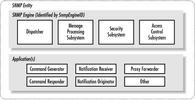

This appendix provides an introduction to SNMPv3 and covers SNMPv3
configuration for a Cisco router and the Net-SNMP agent. Although
SNMPv3 is not yet a full standard, a few vendors sell products with
SNMPv3 support. We chose to cover two popular SNMPv3 implementations
for our configuration examples.
F.1. Changes in SNMPv3
Although SNMPv3 makes no changes to the
protocol aside from the addition of cryptographic security, its
developers have managed to make things look much different by
introducing new textual conventions, concepts, and terminology. The
changes to the terminology are so radical that it's hard to
believe the new terms essentially describe the same software as the
old ones, but they do. However, they do differ in terms of how they
relate to each other and in that they specify much more precisely the
pieces that an SNMP implementation needs.
The
most important change is that Version 3 abandons the notion of
managers and agents. Both managers and agents are now called SNMP
entities. Each entity consists of an SNMP
engine and one or more SNMP applications, which are discussed in the
following sections. These new concepts are important because they
define an architecture, rather than simply defining a set of
messages; the architecture helps to separate different pieces of the
SNMP system in a way that makes a secure implementation possible.
Let's look at what these concepts mean, starting with the RFCs
that define them (Table F-1).
Table F-1. RFCs for SNMPv3
|
Name |
Number |
Status |
Last Activity Date |
|
Architecture
for SNMP Frameworks |
RFC 2571 |
Draft |
April 1999 |
|
Message Processing and Dispatching |
RFC 2572 |
Draft |
April 1999 |
|
SNMP Applications |
RFC 2573 |
Draft |
April 1999 |
|
User-based Security Model |
RFC 2574 |
Draft |
April 1999 |
|
View-based Access Control Model |
RFC 2575 |
Draft |
April 1999 |
|
Protocol Operations for SNMPv2 |
RFC 1905 |
Draft |
January 1996 |
|
Transport Mappings for SNMPv2 |
RFC 1906 |
Draft |
January 1996 |
|
MIB for SNMPv2 |
RFC 1907 |
Draft |
January 1996 |
|
Coexistence Between SNMP Versions |
RFC 2576 |
Proposed |
March 2000 |
|
Introduction to SNMPv3 |
RFC 2570 |
Informational |
April 1999 |
|
Diffie-Hellman USM Key Management |
RFC 2786 |
Experimental |
March 2000 |
F.1.1. The SNMPv3 Engine
The engine is composed of four
pieces: the Dispatcher, the Message Processing Subsystem, the
Security Subsystem, and the Access Control Subsystem. The
Dispatcher's job is to send and receive messages. It tries to
determine the version of each received message (i.e., v1, v2, or v3)
and, if the version is supported, hands the message off to the
Message Processing Subsystem. The Dispatcher also sends SNMP messages
to other entities.
The Message Processing Subsystem
prepares messages to be sent and extracts data from received
messages. A message processing system can contain multiple message
processing modules. For example, a subsystem can have modules for
processing SNMPv1, SNMPv2, and SNMPv3 requests. It may also contain a
module for other processing models that are yet to be defined.
The Security Subsystem provides
authentication and privacy services. Authentication uses either
community strings (SNMP Versions 1 and 2) or SNMPv3 user-based
authentication. User-based authentication uses the MD5 or SHA
algorithms to authenticate users without sending a password in the
clear. The privacy service uses the DES algorithm to encrypt and
decrypt SNMP messages. Currently, DES is the only algorithm used,
though others may be added in the future.
The Access Control Subsystem is
responsible for controlling access to MIB objects. You can control
what objects a user can access as well what operations she is allowed
to perform on those objects. For example, you might want to limit a
user's read-write access to certain parts of the
mib-2 tree, while allowing read-only access to
the entire tree.
F.1.2. SNMPv3 Applications
Version
3 divides most of what we have come to think of as SNMP into a number
of applications:
- Command generator
- Generates
get, get-next,
get-bulk, and set requests
and processes the responses. This application is implemented by a
Network Management Station (NMS), so it can issue queries and
set requests against entities on routers,
switches, Unix hosts, etc.
- Command responder
- Responds to get,
get-next, get-bulk, and
set requests. This application is implemented by
an entity on a Cisco router or Unix host. (For Versions 1 and 2, the
command responder is implemented by the SNMP agent.)
- Notification originator
-
Generates
SNMP traps and notifications. This application is implemented by an
entity on a router or Unix host. (For Versions 1 and 2, the
notification originator is part of an SNMP agent. Freestanding
utilities for generating traps are also available.)
- Notification receiver
-
Receives traps and inform messages.
This application is implemented by an NMS.
- Proxy forwarder
- Facilitates
message-passing between entities.
RFC 2571 allows additional applications to be defined over time. This
ability to extend the SNMPv3 framework is a significant advantage
over the older SNMP versions.
F.1.3. What Does an Entity Look Like?
Thus
far we've talked about the SNMPv3 entity in terms of abstract
definitions.
Figure F-1 (taken from RFC 2571) shows
how the components that make up an entity fit together.

Figure F-1. SNMPv3 entity
F.1.4. SNMPv3 Textual Conventions
SNMPv3 defines a number of
additional textual conventions, outlined in
Table F-2.
Table F-2. SNMPv3 Textual Conventions
|
Textual Convention |
Description |
|
SnmpEngineID |
An administratively unique identifier for an SNMP engine. Objects of
this type are for identification, not for addressing, even though an
address can be used in the generation of a specific value. RFC 2571
provides a detailed discussion of how SnmpEngineIDs are created. |
|
SnmpSecurityModel |
An SNMP securityModel (SNMPv1, SNMPv2, or USM). USM stands for
User-based Security Model, which is the security method used in
SNMPv3. |
|
SnmpMessageProcessingModel |
A Message Processing Model used by the Message Processing Subsystem. |
|
SnmpSecurityLevel |
The level of security at which SNMP messages can be sent, or the
level of security at which operations are being processed. Possible
values are noAuthNoPriv (without authentication
and without privacy), authNoPriv (with
authentication but without privacy), and authPriv
(with authentication and with privacy). These three values are
ordered such that noAuthNoPriv is less than
authNoPriv and authNoPriv is
less than authPriv. |
|
SnmpAdminString |
An octet string containing administrative information, preferably in
human-readable form. The string can be up to 255 bytes in length. |
|
SnmpTagValue |
An octet string containing a tag value. Tag values are preferably in
human-readable form. According to RFC 2573, valid tags include
acme, router, and
host. |
|
SnmpTagList |
An octet string containing a list of tag values. Tag values are
preferably in human-readable form. According to RFC 2573, valid
examples of a tag list are the empty string, acme
router, and host
managerStation. |
|
KeyChange |
An object used to change authentication and privacy keys. |